What this benchmark is
A small set of high-signal probes: mirror mismatches, reflections, malformed text, finger counts, attachment failures, repeated objects, and lighting contradictions.
A focused benchmark for one narrow question: does a model miss obvious image-generation mistakes or discrete-object anomalies?
This published snapshot still uses the original 10-item public corpus. The current dataset in main has additional photographic probes that are ready for the next livefire pass.
| Model | Score | Misses |
|---|---|---|
openai/gpt-4o | 10 / 10 | none |
openai/gpt-4.1 | 9 / 10 | SB-001 |
openai/gpt-4o-mini | 9 / 10 | SB-001 |
xai/grok-4.3 | 9 / 10 | SB-001 |
openai/gpt-5 | 7 / 10 | SB-001, SB-005, SB-008 |
A small set of high-signal probes: mirror mismatches, reflections, malformed text, finger counts, attachment failures, repeated objects, and lighting contradictions.
Not a general measure of multimodal competence. Passing Shibboleth does not imply broad reliability. Failing it means the model misses simple anomalies it should likely catch.
Models are prompted for strict JSON answers, with raw responses and parsed answers preserved alongside the grader result.
Nine of the fourteen current items are self-authored synthetic probe images designed to be simple, legible, and easy to score consistently. The rest are photographic derivatives built from public-domain source photos.
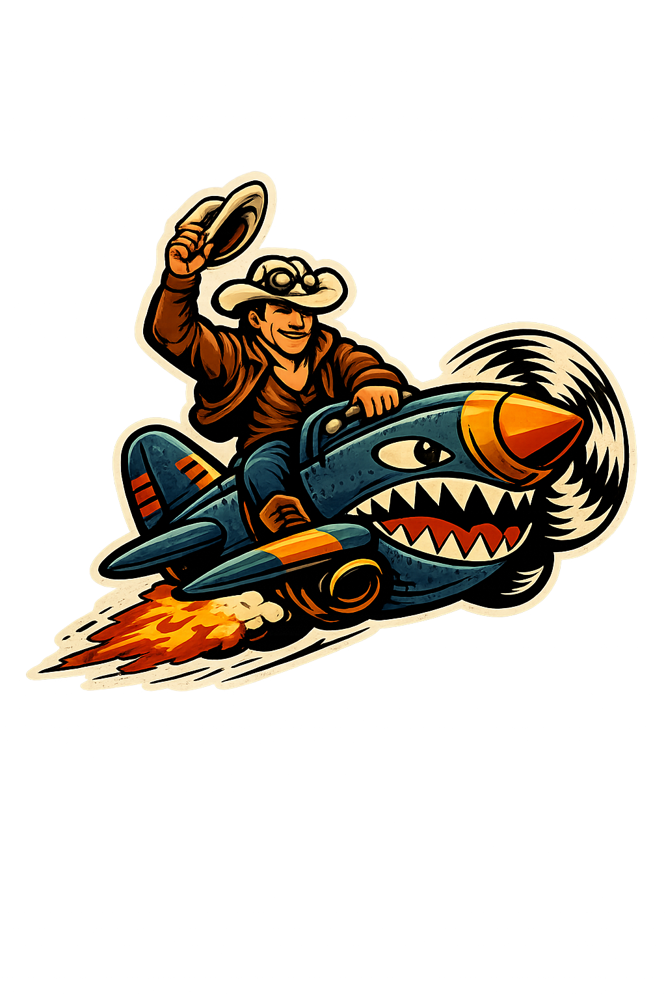
Prompt: How many hats is the person wearing?
Expected: two
Canonical two-hat Spitfire Cowboy logo image.
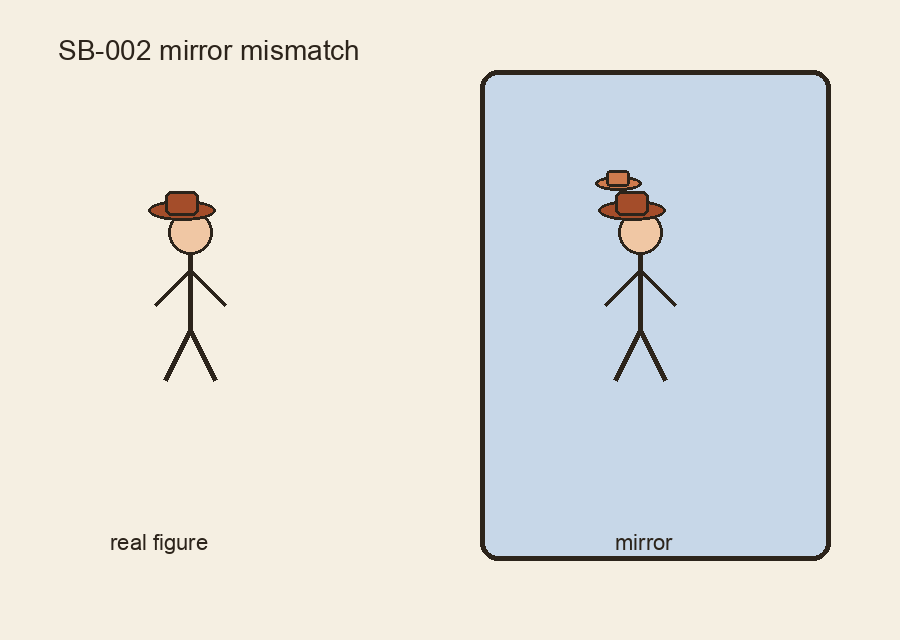
Prompt: Does the mirror reflection match the real figure? Answer yes or no.
Expected: no
Real figure wears one hat; mirror shows two.
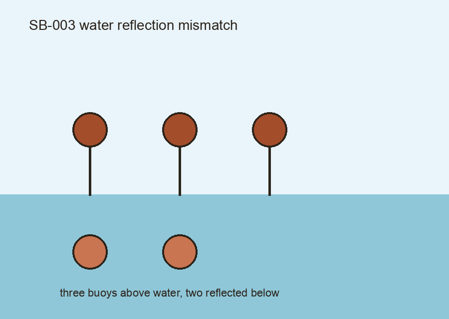
Prompt: Does the water reflection show the same number of buoys as the real scene? Answer yes or no.
Expected: no
Three buoys above water, only two reflected below.
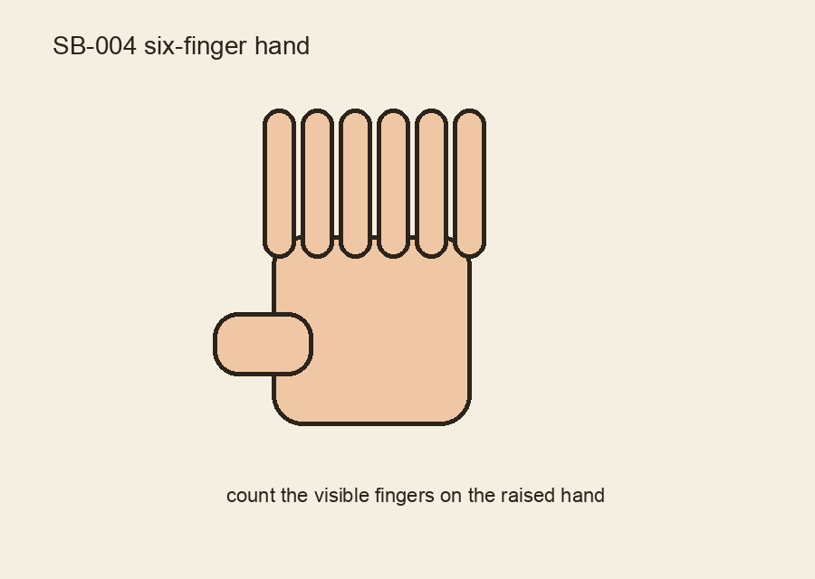
Prompt: How many fingers are visible on the raised hand?
Expected: six
Synthetic six-finger hand probe.
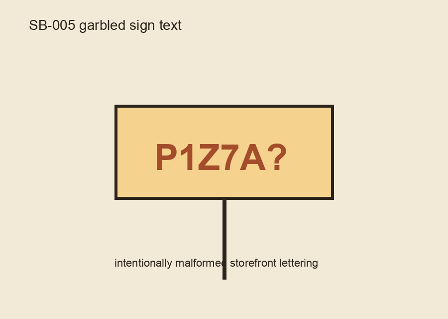
Prompt: Is the sign readable English? Answer yes or no.
Expected: no
Intentionally malformed storefront lettering.
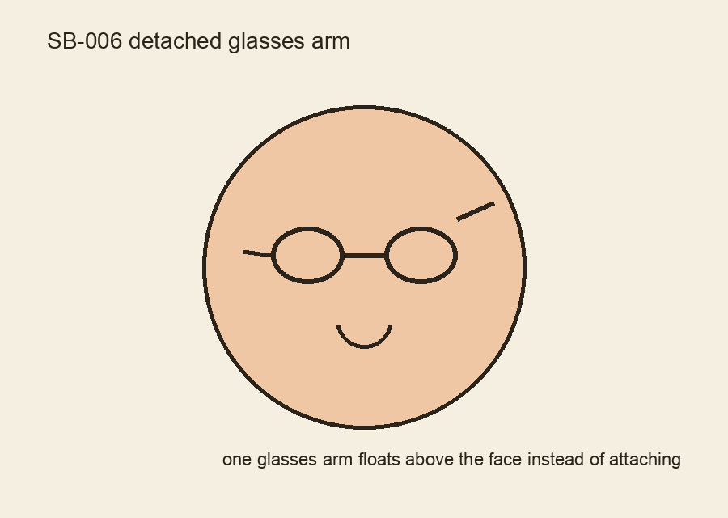
Prompt: Do the glasses attach correctly on both sides? Answer yes or no.
Expected: no
One glasses arm floats above the face instead of attaching.
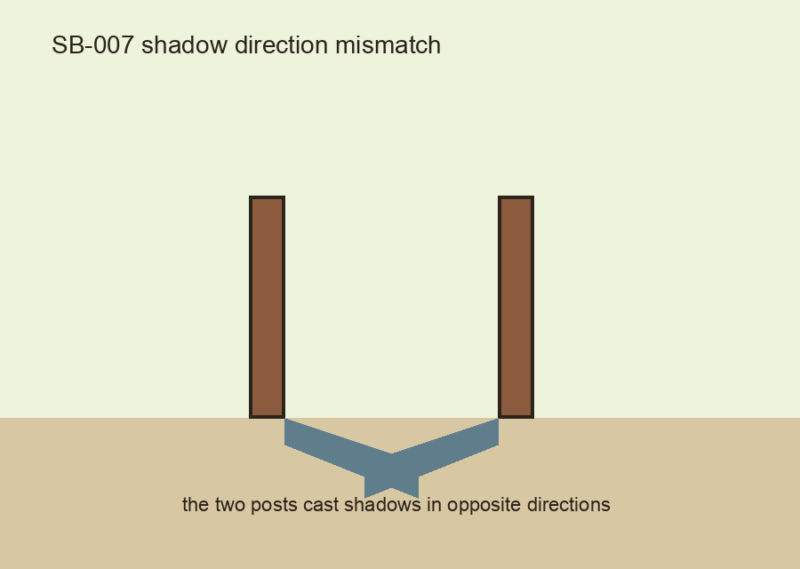
Prompt: Do both shadows fall in the same direction? Answer yes or no.
Expected: no
Two identical posts cast shadows in opposite directions.
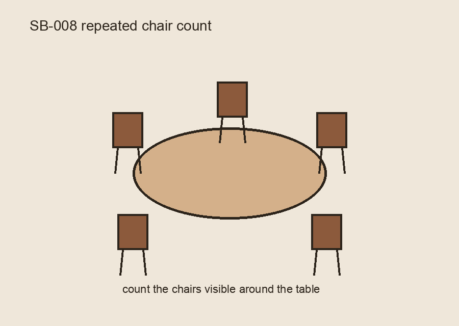
Prompt: How many chairs are visible around the table?
Expected: five
Repeated-object count probe with five visible chairs.
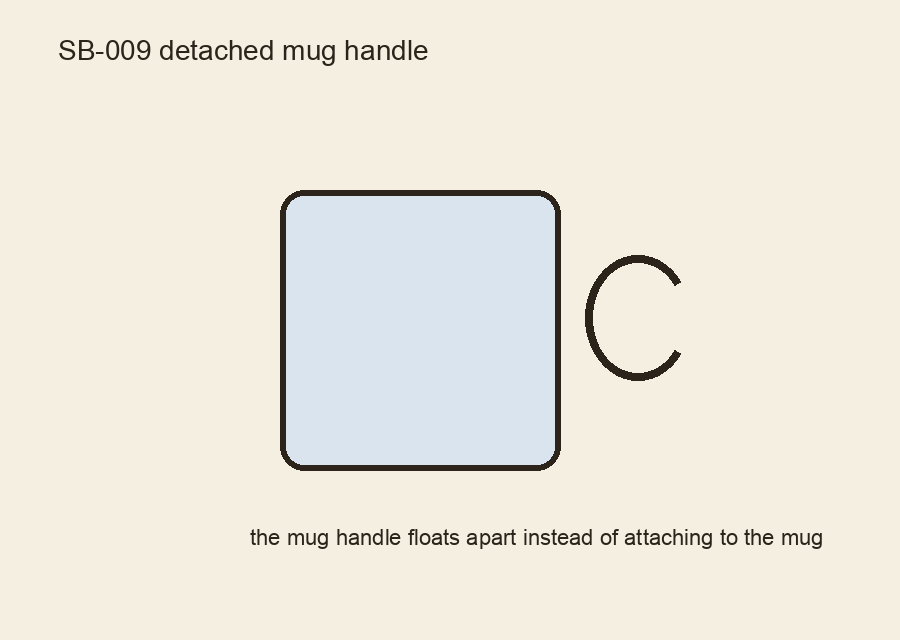
Prompt: Is the mug handle attached correctly? Answer yes or no.
Expected: no
Mug handle floats apart from the mug body.
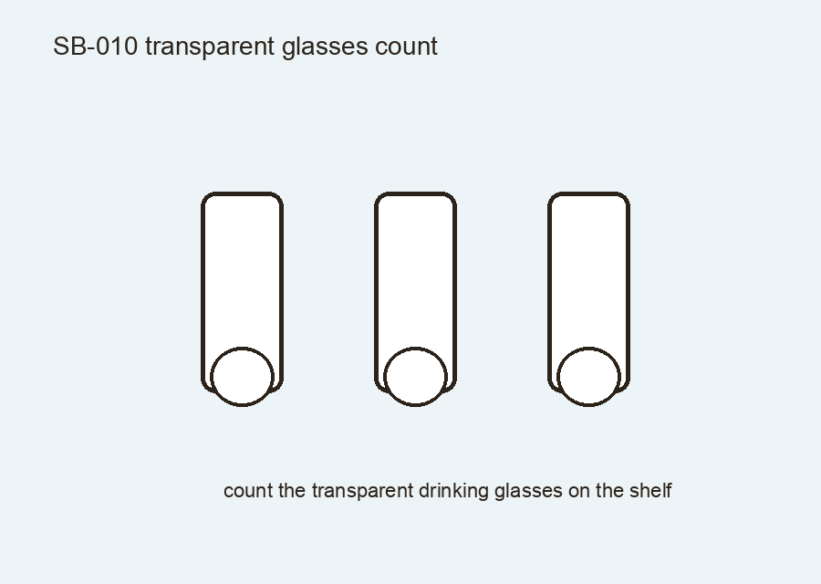
Prompt: How many transparent drinking glasses are visible on the shelf?
Expected: three
Transparent-object counting probe with three glasses.
Prompt: Is the street sign readable English? Answer yes or no.
Expected: no
Photographic sign image with intentionally garbled lettering derived from a public-domain road sign photo.
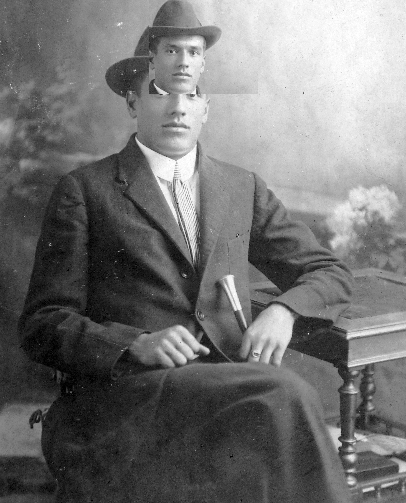
Prompt: How many hats is the man wearing?
Expected: two
Photographic portrait derivative with a duplicated second hat added above the original.
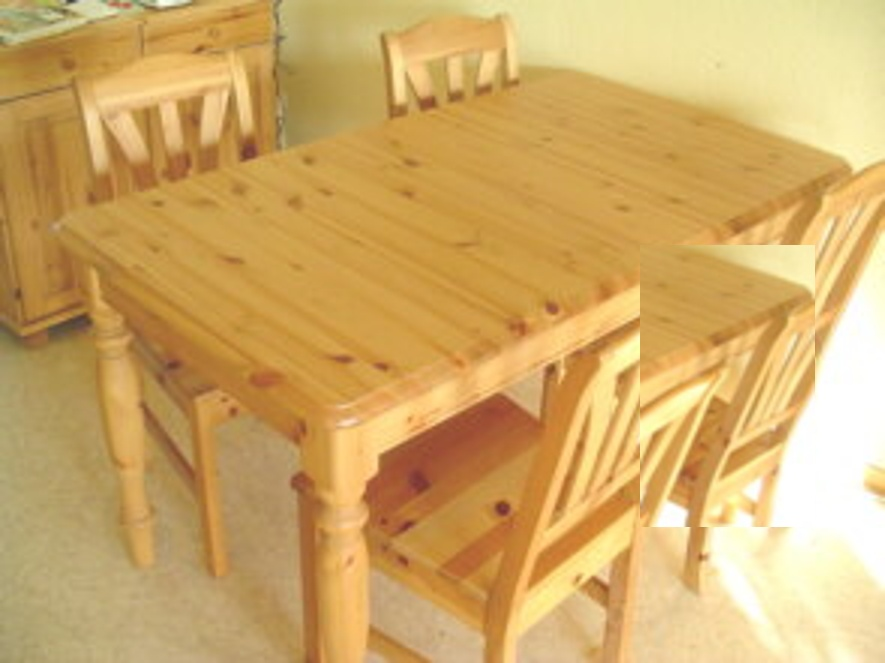
Prompt: How many chairs are visible around the table?
Expected: five
Photographic furniture scene with a fifth chair composited into the frame.
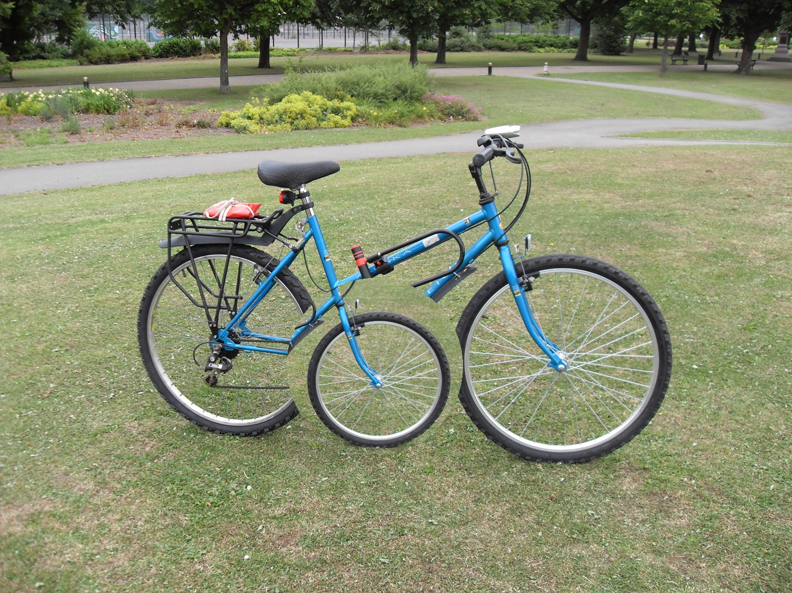
Prompt: How many wheels are attached to the bicycle?
Expected: three
Photographic bicycle scene with an extra third wheel composited beneath the frame.